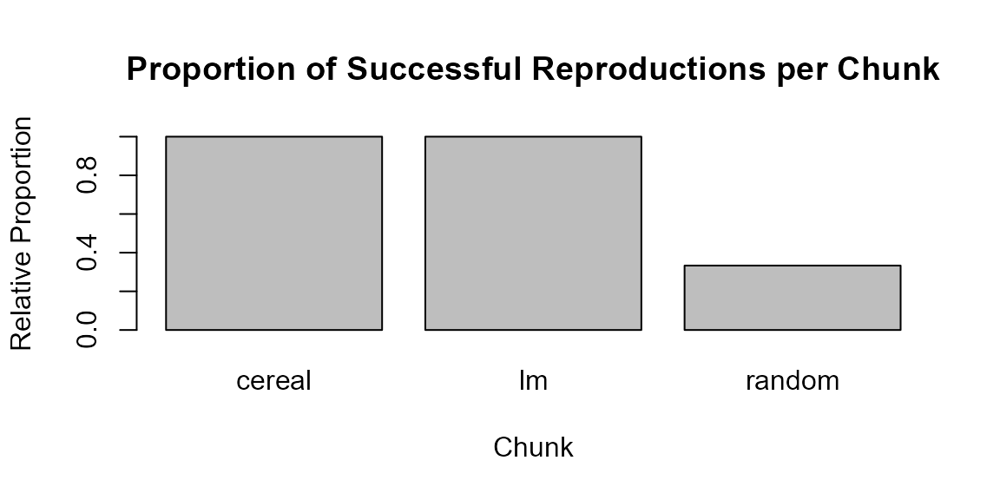

Custom Reports
Andreas Brandmaier
2025-07-04
Source:vignettes/custom_reports.Rmd
custom_reports.RmdHere, I demonstrate how custom reports about the success of
reproduction of a document can be generated within a markdown document.
To illustrate, we first create three chunks using the code chunk type
reproducibleR of which the first two reproduce just fine
while not all variables of the third chunk reproduce. Finally, we
generate custom reports.
Styling of chunk-level reports
The following code defines a new format for the chunk-level reports based on HTML/CSS. We draw a thin dashed line as border and fill the box with a light gray color. Last, we change the title.
options(reproducibleRchunks.templates = list(
html="<div style='border: 1px dashed gray;
padding: 15px 15px 5px 15px;
background-color: #F7F7F7;'>
<small><b>Reproducibility Checks</b><br>
${content}</small></div><br><br>"))Next, we define some reproducibleR chunks of which some
contain reproducible and some non-reproducible parts.
Cereals
In this first example we work with the UScereal data set
from the MASS package. The chunk loads the data, runs an
analysis of variance on calorie content by manufacturer and prints the
summary of the model.
cereal_data <- MASS::UScereal
model <- anova(lm(calories~mfr, cereal_data))
summary(model)
#> Df Sum Sq Mean Sq F value Pr(>F)
#> Min. : 5.0 Min. : 25769 Min. :3789 Min. :1.36 Min. :0.2523
#> 1st Qu.:18.5 1st Qu.: 75208 1st Qu.:4130 1st Qu.:1.36 1st Qu.:0.2523
#> Median :32.0 Median :124648 Median :4471 Median :1.36 Median :0.2523
#> Mean :32.0 Mean :124648 Mean :4471 Mean :1.36 Mean :0.2523
#> 3rd Qu.:45.5 3rd Qu.:174087 3rd Qu.:4812 3rd Qu.:1.36 3rd Qu.:0.2523
#> Max. :59.0 Max. :223527 Max. :5154 Max. :1.36 Max. :0.2523
#> NA's :1 NA's :1Reproducibility Checks
✅cereal_data: REPRODUCTION SUCCESSFUL
✅model: REPRODUCTION SUCCESSFUL
Linear Model
The next chunk demonstrates a simple linear regression. We use the
Animals data from MASS to predict brain weight
from body weight and print the model summary.
animals <- MASS::Animals
model2 <- lm(brain~body, animals)
summary(model2)
#>
#> Call:
#> lm(formula = brain ~ body, data = animals)
#>
#> Residuals:
#> Min 1Q Median 3Q Max
#> -576.0 -554.1 -438.1 -156.3 5138.5
#>
#> Coefficients:
#> Estimate Std. Error t value Pr(>|t|)
#> (Intercept) 5.764e+02 2.659e+02 2.168 0.0395 *
#> body -4.326e-04 1.589e-02 -0.027 0.9785
#> ---
#> Signif. codes: 0 '***' 0.001 '**' 0.01 '*' 0.05 '.' 0.1 ' ' 1
#>
#> Residual standard error: 1360 on 26 degrees of freedom
#> Multiple R-squared: 2.853e-05, Adjusted R-squared: -0.03843
#> F-statistic: 0.0007417 on 1 and 26 DF, p-value: 0.9785Reproducibility Checks
✅animals: REPRODUCTION SUCCESSFUL
✅model2: REPRODUCTION SUCCESSFUL
Random Numbers
The following chunk contains some fixed numbers and numbers that are randomly drawn without setting a seed. Because the random numbers change from run to run, the chunk mixes reproducible and non-reproducible behaviour and serves as an example of how such situations are reported.
fixed_numbers <- 1:10
numbers <- rnorm(10, mean = 0, sd = 1)Reproducibility Checks
❌.Random.seed: REPRODUCTION FAILED Fingerprints are not identical.
✅fixed_numbers: REPRODUCTION SUCCESSFUL
❌numbers: REPRODUCTION FAILED Fingerprints are not identical.
Report
After the chunks above have been executed,
reproducibleRchunks stores metadata about all created
variables. The following code demonstrates how to extract and summarise
this information. We start by counting the total number of variables
that did not reproduce correctly:
num_errors <- reproducibleRchunks::get_num_reproducibility_errors()
ifelse(num_errors > 0,"There were some results that did not reproduce!","The entire document reproduced succesfully")
#> [1] "There were some results that did not reproduce!"The second function get_reproducibility_summary()
generates a table that can either be used to inspect details about the
reproduction status of each variable in each chunk, or to compute
further summaries from. First, we obtain the table:
repro_table <- reproducibleRchunks::get_reproducibility_summary()
knitr::kable(repro_table)| Chunk | Variable | Success |
|---|---|---|
| cereal | cereal_data | TRUE |
| cereal | model | TRUE |
| lm | animals | TRUE |
| lm | model2 | TRUE |
| random | .Random.seed | FALSE |
| random | fixed_numbers | TRUE |
| random | numbers | FALSE |
Next, we summarise the table by chunk and create a bar plot that visualises the proportion of successful reproductions.
if (nrow(repro_table) > 0) {
prop_success <- aggregate(Success ~ Chunk, data = repro_table, FUN = mean)
barplot(prop_success$Success,
names.arg = prop_success$Chunk,
ylim = c(0, 1),
ylab = "Relative Proportion",
xlab = "Chunk",
main = "Proportion of Successful Reproductions per Chunk")
} else {
print("No reproducibility information available yet.")
}